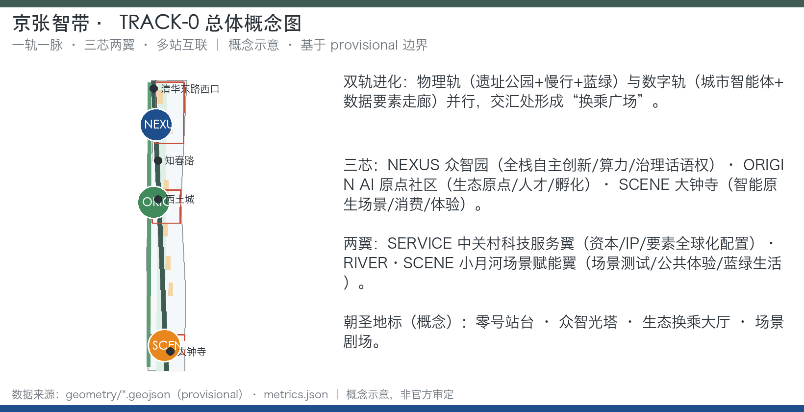
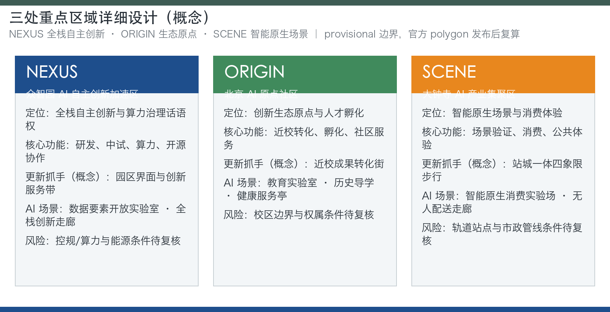
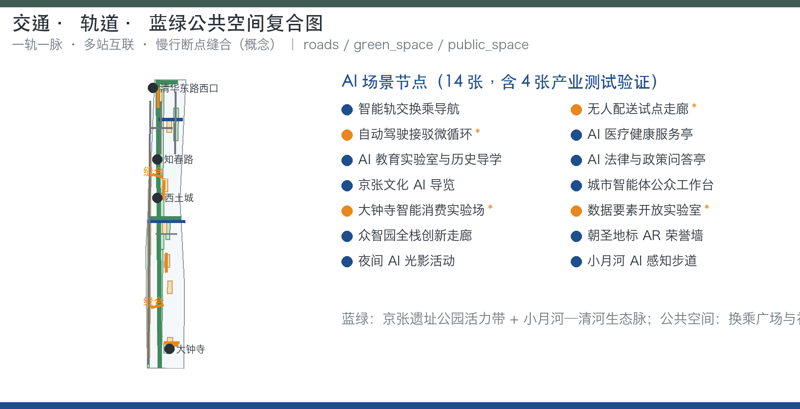
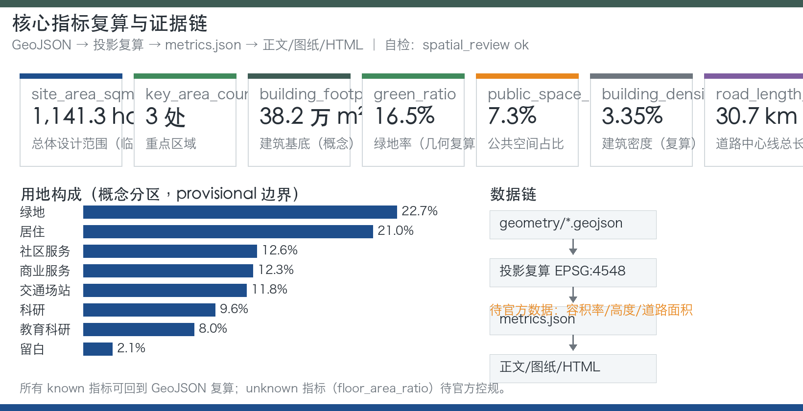
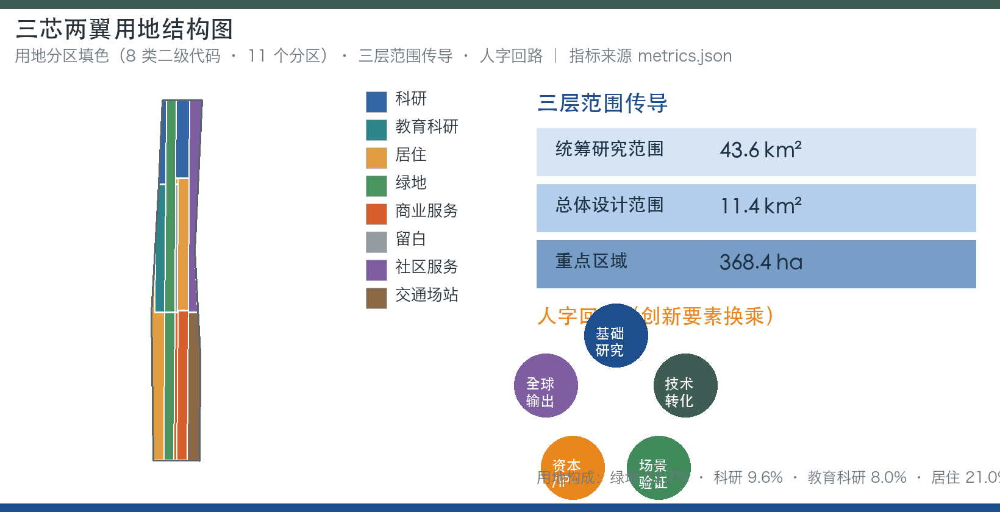

京张智带·零号智轨——百年京张AI创新带城市设计开源方案
以「一轨一脉、三芯两翼、多站互联」为空间框架，提出京张智带（JZ·AI Belt）与零号智轨（TRACK-0）品牌体系，通过生态换乘站、双轨进化、人字回路治理和零号轨道公共接口四项原创机制，把百年京张铁路史转化为 AI 时代可生长的带状城市智能体方案。
京张智带·零号智轨——百年京张AI创新带城市设计开源方案
设计依据与资料清单
本方案以北京市规划和自然资源委员会海淀分局 2026 年 5 月发布的《百年京张AI创新带城市设计国际方案征集资格预审公告》为任务第一依据 [source:OFFICIAL-ANNOUNCEMENT]，以仓库内面向智能体的开源征集任务书为共创边界 [source:AGENT-TASKBOOK]，以 brief/site-package/ 提供的设计任务书、允许设计空间、枚举、范围、模式和机器可读来源清单为生成依据 [source:SITE-PACKAGE]。所有事实与空间判断均回到 data/source_registry.json 登记的资料边界 [source:SOURCE-REGISTRY]，通过 data/processed/agent_fact_pack.md 阅读导航层组织任务、范围、来源用途和缺资料清单 [source:PROCESSED-FACT-PACK]。
需要特别说明的是：组织方尚未发布官方 SITE_BOUNDARY 和三处重点区域的精确多边形，本方案使用 brief/site-package/geometry/provisional_boundaries.geojson 生成的临时边界开展方案表达 [source:BOUNDARY-SOURCE] [source:KEY-AREA-SOURCE]。该边界仅用于 AI 生成、可视化与非法定设计讨论，不得作为官方红线、审批依据、精确面积复算依据或法定控制结论。官方边界发布后，site boundary、key areas、land use、roads、green space、public space、buildings、phasing 和全部空间指标均需重新复算 [depth:existing_conditions_diagnosis] [depth:metrics_recalculation]。本方案的史实与背景事实（京张铁路修建史、清华园车站、京张铁路遗址公园一期开放、海淀 AI 产业背景）经公开权威资料核实后写入，并登记为可追溯来源 [source:RESEARCH-JZ-RAILWAY] [source:RESEARCH-QHY-STATION] [source:RESEARCH-PARK-2023] [source:RESEARCH-HAIDIAN-AI]。
方案深度按公告和任务书要求组织：统筹研究范围回答产业生态与未来城市形态 [standard:PROJECT-OFFICIAL-ANNOUNCEMENT]；总体设计范围按控规深度城市设计组织用地、慢行、蓝绿、风貌和更新框架 [standard:MOHURD-CONTROL-DETAILED-PLANNING]；三处重点区域按规划综合实施方案深度展开 [standard:MOHURD-URBAN-DESIGN-MEASURES]；用地分类遵循国土空间用地用海分类指南方向 [standard:MNR-LAND-USE-CLASSIFICATION-GUIDE]；建筑设计表达遵循设计文件编制深度规定方向 [standard:MOHURD-ARCH-DESIGN-DEPTH-2016]。AI 共创原则、三大定位、五大功能和三区两翼协同回路按任务书响应 [standard:PROJECT-AGENT-OPEN-CALL-TASKBOOK]。本方案的证据链起点是 [data:geometry/site_boundary.geojson#SITE-001] 与 [data:geometry/key_areas.geojson#PROV-KEY-001]，正文所有空间结论都可回到图层、指标和来源复核。
资料使用规则
本方案执行「公开或清权才用、权限不明就标注、缺资料只给方法」三条规则：一是只使用 sources.json 中登记为官方公开、仓库清权或已核实公开媒体的资料，不引用未登记来源 [source:SOURCE-REGISTRY]；二是凡涉及面积、企业名单、投资额、政策承诺、批准状态的内容，一律以官方公告和登记来源为准，方案自身只给方向性结论 [source:SITE-PACKAGE]；三是资料缺口按「影响—处理方式—正式提交前置条件」显性列出，并与 assumptions.json 的假设条目一一对应 [depth:risk_missing_data]。史实部分采用可追溯公开来源：京张铁路 1905 年开工、1909 年 9 月通车，是首条由中国人自行设计和施工的干线铁路，青龙桥采用人字形折返线路 [source:RESEARCH-JZ-RAILWAY]；清华园车站 1910 年设立，是京张铁路出西直门站后的第一座车站，站名由詹天佑题写 [source:RESEARCH-QHY-STATION]；京张铁路遗址公园一期 2023 年 6 月开放，位于清华东路至知春路、长约 2.5 公里 [source:RESEARCH-PARK-2023]；海淀区作为中关村发源地，公开资料显示其汇聚 37 所高校、百余家国家级科研机构并形成 AI 全栈产业链 [source:RESEARCH-HAIDIAN-AI]。以上史实为「零号站台」「一轨」等叙事提供可追溯坐标，但均作为背景事实引用，不据此推定任何现状权属或工程条件 [depth:existing_conditions_diagnosis]。

三层范围工作框架
三层范围是方案从宏观到微观的传导骨架，均以公告公布的面积为任务依据：统筹研究范围 43.6 平方公里，回答产业生态战略、创新网络和未来城市形态研究；总体设计范围 11.4 平方公里，本次提交边界即落在该层，以 [data:geometry/site_boundary.geojson#SITE-001] 表达；重点区域 368.4 公顷，聚焦众智园AI自主创新加速区、北京AI原点社区、大钟寺AI产业集聚区三处详细设计，以 [data:geometry/key_areas.geojson#PROV-KEY-001]、[data:geometry/key_areas.geojson#PROV-KEY-002]、[data:geometry/key_areas.geojson#PROV-KEY-003] 表达 [metric:site_area_sqm] [metric:key_area_count]。
三层传导遵循「研究—总体—重点」的深度递进：统筹层确定协同圈与要素流动方向，总体层把协同圈落实为用地、慢行、蓝绿、风貌和更新框架，重点层在 368.4 公顷内给出功能业态、建筑规模方向、交通组织、公共空间和实施项目清单 [depth:three_level_scope_framework]。传导方法分四步：第一步是要素识别，把人才、资本、数据、场景四类要素从统筹层映射到总体层的空间骨架；第二步是空间落位，把要素落到「一轨一脉、三芯两翼、多站互联」的载体上；第三步是深度校核，在重点层用建筑基底、道路中心线、绿地与公共空间图层检验空间动作是否可实现 [data:geometry/buildings.geojson#BLDG-001] [data:geometry/roads.geojson#ROAD-001]；第四步是回写修正，把重点层的矛盾反馈回总体层调整用地与慢行框架 [depth:metrics_recalculation]。三处重点区域面积均为公告约面积，provisional polygon 不得作为官方片区边界，也不得作为正式评分或审批依据 [depth:three_key_area_detailed_design]。现状诊断与资料缺口是三层范围传导的前提：官方边界、控规条件、道路红线、权属、市政和文保控制线缺失时，对应结论一律降级为概念建议 [depth:existing_conditions_diagnosis] [depth:risk_missing_data]。
统筹研究范围产业与未来城市研究
统筹研究范围（43.6 km²）承担三区两翼协同圈研究。本方案提出「人字回路」作为三区两翼协同治理机制：基础研究（高校与 ORIGIN 芯）→ 技术转化（NEXUS 芯）→ 场景验证（SCENE 芯与 RIVER·SCENE 翼）→ 资本与 IP（SERVICE 翼）→ 全球输出并回馈 ORIGIN 芯。创新要素像列车一样在生态换乘站换乘，人才、资本、数据、场景四类要素的周转与停留效率成为城市设计与 AI 生态指标同构的观察对象 [depth:overall_spatial_structure] [standard:PROJECT-AGENT-OPEN-CALL-TASKBOOK]。
AI 创新生态图谱围绕三层展开：核心层为三芯（NEXUS 全栈自主创新、ORIGIN 创新生态原点、SCENE 智能原生场景）；支撑层为两翼（SERVICE 资本/IP/要素全球化配置、RIVER·SCENE 场景测试与公共体验）；外圈为高校群、园区群、社区和全球开发者网络。海淀区作为中关村发源地，公开资料显示其汇聚 37 所高校、百余家国家级科研机构并形成 AI 全栈产业链 [source:RESEARCH-HAIDIAN-AI]，这是「人字回路」基础研究端与人才供给端的现实支撑，也为 ORIGIN 芯近校型街区提供了可依托的智力网络。生态机制覆盖土地、空间、产业、资金、人才、算力、数据、场景八类要素，均以公开资料为边界，不把招商、投资或政策安排写成已确定事项 [source:AGENT-TASKBOOK] [depth:risk_missing_data]。
全球案例与可迁移规律
全球案例按「经验→转化机制」提炼，仅作方向性示意，具体数据以公开资料复核为准，不构成企业名单、投资额、产值或政策承诺 [depth:existing_conditions_diagnosis] [source:OFFICIAL-ANNOUNCEMENT]：
| 案例（示意） | 可迁移经验 | 在本带的转化机制 | | --- | --- | --- | | 硅谷斯坦福研究园 | 大学土地/人才与城市税收激励的制度化协作 | ORIGIN 芯近校型园区界面与高校-企业-资本回路 | | 波士顿 Kendall Square | 「校区—园区—城区」连续界面，老工业区更新与弹性办公 | ORIGIN 芯近校型街区缝合与成果转化驿站 | | 新加坡纬壹科技城 one-north | 产业簇群与公共界面分层，花园型园区、混合街区 | NEXUS 芯花园型创新街区与低碳算力体验、总体分期 | | 伦敦 King's Cross 知识区 | 更新型公共空间与知识机构锚定激活存量 | 大钟寺与遗址公园更新运营、场景剧场 | | 柏林 Adlershof | 科研存量再利用、长期整体规划与分期实施 | 一期试点—中期更新—远期治理分期框架 | | 深圳南山科技园与华强北 | 产业链密度、硬件快速原型文化 | 智能终端与内容消费、大钟寺智能原生实验场、无人配送试点 | | 杭州云栖小镇 | 龙头企业策源、年度活动品牌与小镇运营 | TRACK-0 Festival 与开源征集发布、活动-社区-试点回路 | | 特拉维夫创业生态 | 政府服务界面、活动运营与孵化体系 | AI 法律与政策问答亭、企业服务驿站 |
从上述案例可归纳五条对海淀可迁移的规律：第一，**近校型界面**——把高校从「边界」变成「界面」，Kendall Square 与斯坦福研究园都证明连续的校区-园区-城区慢行与功能界面比孤立的产业园区更有效，对应 ORIGIN 芯近校型缝合 [depth:overall_spatial_structure]；第二，**更新型公共空间**——King's Cross 的经验表明，先做好公共空间与慢行网络，再让知识机构与混合功能自发填充，对应大钟寺与遗址公园的更新运营 [depth:blue_green_public_space]；第三，**活动驱动**——云栖小镇以年度大会把产业注意力集中到固定空间，对应 TRACK-0 Festival、Hack the Track 与开源征集的年度节奏 [depth:phasing_implementation]；第四，**分期实施**——Adlershof 与 one-north 均以「小规模试点—中期扩展—长期治理」降低风险，对应本方案近、中、长三期实施框架 [data:geometry/phasing.geojson#PHASE-001] [data:geometry/phasing.geojson#PHASE-002] [data:geometry/phasing.geojson#PHASE-003]；第五，**政府服务界面**——特拉维夫把政策、法务、办公与活动做成面向创业者的公共服务界面，对应 SERVICE 翼的企业服务集群与 AI 政策问答亭。五条规律并非简单照搬，而是在三芯两翼各自的空间语境中转化为「近校缝合、更新提质、活动造势、分期控险、服务界面」五类动作，最终回到人字回路的要素流动 [standard:PROJECT-AGENT-OPEN-CALL-TASKBOOK]。

总体设计范围城市更新与控规深度城市设计
总体设计范围（11.4 km²，本次提交边界）以「一轨一脉、三芯两翼、多站互联」为空间结构：一轨为京张铁路遗址公园活力带，是南北主轴与百年文化轨、AI 体验轨双轨并行 [data:geometry/green_space.geojson#GREEN-001] [data:geometry/green_space.geojson#GREEN-002] [data:geometry/green_space.geojson#GREEN-003]；一脉为小月河—清河蓝绿生态脉，是西侧纵向绿脉并衔接清河 [data:geometry/green_space.geojson#GREEN-004] [data:geometry/green_space.geojson#GREEN-005] [data:geometry/green_space.geojson#GREEN-009]；三芯为众智园（NEXUS）、AI 原点社区（ORIGIN）、大钟寺（SCENE）；两翼为中关村科技服务翼（SERVICE）与小月河场景赋能翼（RIVER·SCENE）；多站为知春路、西土城、大钟寺、清华东路西口等方向性概念节点与 AI 场景节点，并以 [data:geometry/public_space.geojson#PUBLIC-001]、[data:geometry/public_space.geojson#PUBLIC-002]、[data:geometry/public_space.geojson#PUBLIC-003]、[data:geometry/public_space.geojson#PUBLIC-004] 四座换乘广场为空间锚点 [depth:overall_spatial_structure] [depth:land_use_layout]。
用地框架
用地框架覆盖提交边界且无重叠，用地方案为概念建议，最终以官方控规和几何复算为准 [standard:MOHURD-CONTROL-DETAILED-PLANNING] [depth:development_intensity_controls]：
| 用地方向 | 概念比例（按临时几何复算） | 几何表达（provisional） | | --- | --- | --- | | 公园绿地与开敞空间（1401，遗址公园活力带、小月河绿廊、社区公园） | 约 22.7% | [data:geometry/land_use.geojson#LU-002] [data:geometry/land_use.geojson#LU-007] | | 科研与教育用地（0802+0804，AI 研发、教育科研与创新社区，含高校周边方向） | 约 17.6% | [data:geometry/land_use.geojson#LU-001] [data:geometry/land_use.geojson#LU-005] [data:geometry/land_use.geojson#LU-011] | | 商业服务业用地（05，大钟寺场景芯、沿轨商业与创新服务带） | 约 12.3% | [data:geometry/land_use.geojson#LU-003] | | 居住用地（0701，更新社区、人才公寓与混合社区） | 约 21.0% | [data:geometry/land_use.geojson#LU-006] [data:geometry/land_use.geojson#LU-010] | | 社区服务与配套用地（0702） | 约 12.6% | [data:geometry/land_use.geojson#LU-004] | | 道路与交通设施（1207，含轨道一体化用地） | 约 11.8% | [data:geometry/land_use.geojson#LU-008] | | 留白与发展备用地（16） | 约 2.1% | [data:geometry/land_use.geojson#LU-009] |
AI 研发与创新服务用地分布在众智园方向（代码 0802）与原点社区方向（代码 0804），由 [data:geometry/land_use.geojson#LU-001]、[data:geometry/land_use.geojson#LU-005] 与 [data:geometry/land_use.geojson#LU-011] 表达，商业服务业用地（代码 05）集中在大钟寺方向 [data:geometry/land_use.geojson#LU-003]，社区服务与配套用地（代码 0702）覆盖东段居住片区 [data:geometry/land_use.geojson#LU-004]。上述比例是空间结构推演并随临时几何复算的方向性结论，不是审定用地指标；缺乏控规条件时不得写成审定容积率、建筑高度或建设规模 [depth:development_intensity_controls] [metric:land_use_0701_area_sqm] [metric:land_use_0702_area_sqm] [metric:land_use_05_area_sqm] [metric:land_use_0802_area_sqm] [metric:land_use_0804_area_sqm] [metric:land_use_1207_area_sqm] [metric:land_use_1401_area_sqm] [metric:land_use_16_area_sqm]。
双轨进化与五级拆改留
「双轨进化」是本层机制亮点：物理轨承载公园、慢行与蓝绿系统，数字轨承载城市智能体、数据要素走廊与轨道接口；两轨交汇处形成「换乘广场」，既是物理换乘点，也是数据、场景与公众参与的交汇点 [data:geometry/public_space.geojson#PUBLIC-008]。城市更新采用「保留—改造—更新—新建—待确认」五级拆改留框架：保留指文保与具有历史价值的对象（以清华园车站旧址、京张铁路遗址为方向，需文保部门确认）[data:geometry/constraints.geojson#CONS-001]；改造指功能置换与空间微调（如沿轨旧楼宇的 AI 化改造）[data:geometry/buildings.geojson#BLDG-002]；更新指成片居住与产业片区升级 [data:geometry/buildings.geojson#BLDG-031] [data:geometry/buildings.geojson#BLDG-032]；新建指为 AI 新业态补充的空间 [data:geometry/buildings.geojson#BLDG-005]；待确认指现状建筑、权属与控规条件不足、需现场与法定复核的对象。五级框架只给出方法与待校准清单，不编造拆改留结论 [depth:retain_renovate_demolish] [data:geometry/buildings.geojson#BLDG-001] [data:geometry/phasing.geojson#PHASE-001]。风貌控制按「轨、站、芯、翼、脉」五类空间提出界面、高度、体量、屋顶和材质方向：轨为京张铁灰绿，站为站点一体化灰绿+蓝，芯为中关村蓝，翼为蓝+暖橙混合界面，脉为蓝绿生态色系；具体控制值等待官方控规与文保条件 [depth:height_massing_character] [depth:risk_missing_data]。
重点区域详细设计
三处重点区域按规划综合实施方案的城市设计深度展开，均以公告名称为任务依据、以 provisional polygon 为表达载体，不得作为官方片区边界 [depth:three_key_area_detailed_design]。每处重点区均给出定位与角色、空间结构、建筑更新方向、交通慢行、公共空间与蓝绿、AI 场景、实施抓手与风险七项内容，并回链到真实图层 feature。
众智园AI自主创新加速区（NEXUS 芯）
**定位与角色**：花园型全栈自主创新街区，承担全栈自主创新体系、国家级集聚区方向和 AI 治理话语权，是「人字回路」技术转化端与算力端的主承载区 [data:geometry/key_areas.geojson#PROV-KEY-001] [metric:key_area_zhongzhiyuan_area_sqm]。
**空间结构**：以「清河界面—创新服务轴—众智坊组团」组织节点-廊道-片区结构。清河界面形成低碳创新交往岸线 [data:geometry/green_space.geojson#GREEN-009]；创新服务轴沿慢行与创新服务廊道组织 [data:geometry/roads.geojson#ROAD-001]；组团内由 AI 研发组团、实验室群、孵化器与算力运营中心构成 [data:geometry/buildings.geojson#BLDG-002] [data:geometry/buildings.geojson#BLDG-003] [data:geometry/buildings.geojson#BLDG-004] [data:geometry/buildings.geojson#BLDG-006] [data:geometry/buildings.geojson#BLDG-008]。
**建筑更新方向**：新建 AI 研发大楼、大模型实验室与具身智能实验室 [data:geometry/buildings.geojson#BLDG-001] [data:geometry/buildings.geojson#BLDG-003] [data:geometry/buildings.geojson#BLDG-004]；改造创新服务办公与算力运营中心 [data:geometry/buildings.geojson#BLDG-007] [data:geometry/buildings.geojson#BLDG-008]；新建研发商业综合体与众智坊 [data:geometry/buildings.geojson#BLDG-009] [data:geometry/buildings.geojson#BLDG-010]；众智光塔展示中心承载标准治理展示与荣誉墙 [data:geometry/buildings.geojson#BLDG-011]；其余现状建筑列入待确认清单。
**交通慢行**：依托内部支路与东段支路组织短距通勤 [data:geometry/roads.geojson#ROAD-005] [data:geometry/roads.geojson#ROAD-007]，经学院路方向次干路向北联系 [data:geometry/roads.geojson#ROAD-006]，通过三芯中轴换乘广场衔接东西向 [data:geometry/public_space.geojson#PUBLIC-008]。
**公共空间与蓝绿**：众智园社区公园与创新服务广场构成日常公共节点 [data:geometry/green_space.geojson#GREEN-006] [data:geometry/public_space.geojson#PUBLIC-006]，清河界面滨水绿带提供低碳交往与展示岸线 [data:geometry/green_space.geojson#GREEN-009] [metric:green_space_area_sqm]。
**AI 场景**：数据要素开放实验室（场景 10）、众智园全栈创新走廊展示（场景 11）、众智光塔 AR 荣誉墙（场景 12）落位本区，其中场景 10 为产业测试验证场景 [depth:municipal_new_infrastructure]。
**实施抓手与风险**：抓手为「清河界面更新 + 低碳算力展示 + 标准治理工作坊」三类轻量动作；风险为蓝线、防洪、电力容量与园区权属条件未确认，清河界面改造需以官方蓝线与防洪复核为前提 [data:geometry/constraints.geojson#CONS-002] [depth:risk_missing_data]。
北京AI原点社区（ORIGIN 芯）
**定位与角色**：近校型创新街区与成果孵化转化、人才特区方向，是「人字回路」基础研究端与人才供给端，也是生态换乘站的起点 [data:geometry/key_areas.geojson#PROV-KEY-002] [metric:key_area_origin_area_sqm]。
**空间结构**：以「近校界面—成果转化街—原点创客广场」组织节点-廊道-片区结构。近校界面沿教育科研与创新社区用地展开 [data:geometry/land_use.geojson#LU-005]；成果转化街以东西向联系次干路为骨架 [data:geometry/roads.geojson#ROAD-003]，以原点社区支路加密街区 [data:geometry/roads.geojson#ROAD-008]；原点创客广场承载发布、路演与日常交往 [data:geometry/public_space.geojson#PUBLIC-005]。
**建筑更新方向**：新建近校成果转化楼与 AI 通识实验室 [data:geometry/buildings.geojson#BLDG-013] [data:geometry/buildings.geojson#BLDG-014]；改造原点孵化器与学生创业工坊 [data:geometry/buildings.geojson#BLDG-015] [data:geometry/buildings.geojson#BLDG-016]；更新原点人才公寓与学者社区 [data:geometry/buildings.geojson#BLDG-017] [data:geometry/buildings.geojson#BLDG-018]，新建青年人才公寓 [data:geometry/buildings.geojson#BLDG-019]；原点社区服务中心承载社区服务 [data:geometry/buildings.geojson#BLDG-020]；零号站台换乘楼与成果转化街坊沿遗址公园布置 [data:geometry/buildings.geojson#BLDG-012] [data:geometry/buildings.geojson#BLDG-022]。
**交通慢行**：以零号站台换乘楼组织轨道接驳与慢行换乘 [data:geometry/buildings.geojson#BLDG-012]，衔接知春路站接驳线 [data:geometry/roads.geojson#ROAD-009] 与清华东路西口轨道接驳广场 [data:geometry/public_space.geojson#PUBLIC-004]；处理跨遗址公园东西向慢行断点 [data:geometry/roads.geojson#ROAD-002]。
**公共空间与蓝绿**：原点社区口袋公园与创客广场提供绿量与活动空间 [data:geometry/green_space.geojson#GREEN-007] [data:geometry/public_space.geojson#PUBLIC-005]，生态换乘大厅作为创新生态原点与荣誉展示地标 [depth:blue_green_public_space]。
**AI 场景**：AI 医疗健康服务亭（场景 04）、AI 教育实验室与历史导学（场景 05）、城市智能体公众工作台（场景 08）落位本区及周边居住片区。
**实施抓手与风险**：抓手为「近校慢行缝合 + 开源发布厅 + 低扰动更新」三类动作；风险为校区园区权属、低扰动更新边界与文保条件未确认，不得把高校、园区或街区改造写成已获权属同意 [data:geometry/constraints.geojson#CONS-001] [source:AGENT-TASKBOOK] [depth:retain_renovate_demolish]。
大钟寺AI产业集聚区（SCENE 芯）
**定位与角色**：城市型智能经济与智能原生新业态街区，是「人字回路」场景验证端与消费体验端 [data:geometry/key_areas.geojson#PROV-KEY-003] [metric:key_area_dazhongsi_area_sqm]。
**空间结构**：以「大钟寺站城一体—四象限步行环—场景剧场」组织节点-廊道-片区结构。站城一体综合体力求缝合轨道与街区 [data:geometry/buildings.geojson#BLDG-025]，四象限步行环依托大钟寺站周边轨道接驳 [data:geometry/roads.geojson#ROAD-004] [data:geometry/roads.geojson#ROAD-015]，场景剧场作为活动主场 [data:geometry/buildings.geojson#BLDG-030]。
**建筑更新方向**：新建智能消费实验场与场景体验商街 [data:geometry/buildings.geojson#BLDG-023] [data:geometry/buildings.geojson#BLDG-024]；更新大钟寺场景坊与产业服务办公 [data:geometry/buildings.geojson#BLDG-026] [data:geometry/buildings.geojson#BLDG-029]；新建大钟寺轨道接驳中心与无人配送分拨站 [data:geometry/buildings.geojson#BLDG-027] [data:geometry/buildings.geojson#BLDG-028]；其余现状商业与居住列入待确认清单。
**交通慢行**：组织大钟寺站城一体换乘广场与四象限步行连通 [data:geometry/public_space.geojson#PUBLIC-003] [data:geometry/roads.geojson#ROAD-004]；通过大钟寺站接驳延伸线连接南侧功能 [data:geometry/roads.geojson#ROAD-015]；优化重点企业周边公共环境与静态交通 [depth:traffic_rail_slow_parking]。
**公共空间与蓝绿**：大钟寺站前绿带与站城一体换乘广场构成门户 [data:geometry/green_space.geojson#GREEN-008] [data:geometry/public_space.geojson#PUBLIC-003] [metric:public_space_area_sqm]。
**AI 场景**：智能轨交换乘导航（场景 01）、大钟寺智能原生消费实验场（场景 09）、无人配送与低速机器人试点走廊（场景 02）落位本区，其中场景 02 与 09 为产业测试验证场景。
**实施抓手与风险**：抓手为「站点一体化 + 四象限步行 + 消费实验场」三类动作；风险为轨道一体化改造、交通安全复核与运营主体未确认，大钟寺站一体化改造仅为概念方向，不得写成已批准工程 [data:geometry/constraints.geojson#CONS-003] [depth:traffic_rail_slow_parking] [source:AGENT-TASKBOOK]。
一带文化原点与地标体系
「零号站台（Track-0 Platform）」作为一带文化原点地标，指向清华园车站旧址方向，以百年站台记忆与 AI 首发站装置为概念，呼应 1909 年中国人自主修筑第一条干线铁路的历史起点 [source:AGENT-TASKBOOK] [depth:blue_green_public_space]。公开史料显示，清华园车站建于 1910 年，是京张铁路出西直门站后的第一座车站，站名由詹天佑题写 [source:RESEARCH-QHY-STATION]；这一史实为「零号站台」提供了可追溯的文化坐标。四座朝圣地标方向全部为概念级公共艺术与展示，不涉工程结论，具体见「蓝绿空间、公共空间与城市风貌」章节。
AI 创新生态、人才画像与 AI+ 场景
AI 创新生态以「三芯两翼」为空间载体，以「生态换乘站（Ecosystem Interchange）」为组织机制，提出人才、资本、数据、场景四类要素的「换乘效率」观察指标，城市设计与 AI 生态指标首次同构 [standard:PROJECT-AGENT-OPEN-CALL-TASKBOOK] [depth:metrics_recalculation] [metric:scenario_node_count]。生态换乘站的本质不是新建一座建筑，而是把三芯两翼的节点、廊道与广场组织成「要素可换乘」的城市系统：人才在 ORIGIN 与 NEXUS 之间流动靠近校慢行与轨道接驳 [data:geometry/roads.geojson#ROAD-003]，资本与 IP 在 SERVICE 翼配置，数据与场景在 NEXUS 开放实验室与 SCENE 实验场周转，四类要素的周转时间与停留时长成为未来可观测、可校准的绩效方向 [depth:overall_spatial_structure]。
七类用户画像
用户画像覆盖七类，每类从「典型一天—空间需求—服务缺口—对应场景」四个维度描述，全部为概念画像，不采集个人行为数据 [source:AGENT-TASKBOOK]：
| 画像 | 典型一天 | 空间需求 | 服务缺口 | 对应场景 | | --- | --- | --- | --- | --- | | 青年 AI 工程师/开发者 | 通勤到站、白天协作开发、晚间社区活动 | 原点社区开源发布厅、公共代码墙、夜间协作空间 | 弹性工位、开放数据目录、社区活动 | 场景 07/08/13 | | 高校科研团队 | 校内实验、跨校中试、数据训练 | 近校成果转化街、数据要素开放实验室、测试沙箱 | 算力预约、数据授权流程、中试空间 | 场景 05/10 | | 创业者与中小企业 | 通勤、路演、试点测试、政策咨询 | 众智园共享测试场、企业服务驿站、合规咨询 | 政策导航、资本对接、试点合规 | 场景 06/09 | | 园区企业员工 | 通勤、餐饮、会议、健康、夜生活 | 轨道接驳微循环、沿轨商业、夜间光影运营 | 高峰接驳、健康服务、夜间消费 | 场景 01/03/13 | | 社区居民与老人 | 买菜、就医、接娃、公园活动 | AI 医疗健康服务亭、社区服务嵌入、参与工作台 | 健康导航、适老服务、社区参与 | 场景 04/08/14 | | 游客与 AI 爱好者 | 朝圣打卡、导览、活动参与 | 京张文化 AI 导览、零号站台、场景剧场 | 多语种导览、路线组织、活动信息 | 场景 01/07/12 | | 政府/公共治理人员 | 数据合规审查、跨部门协同、监测评估 | 城市智能体公众工作台、治理沙盘 | 数据可审计、决策可解释、评估公开 | 场景 08/10 |
画像与空间的对应不是「一人一空间」，而是同一空间在一天中为多类人群服务：原点创客广场白天服务高校团队路演、傍晚服务开发者聚会、夜间承载光影活动，这正是带状城市智能体「空间复用」的运营方向 [depth:blue_green_public_space] [metric:public_space_ratio]。
十四张场景卡
场景卡共 14 张，全部落到空间载体、数据来源、隐私边界、人工复核、运营主体、可视化图层与风险七要素，其中 4 张标注为产业测试验证场景。场景 01–07 见表一：
| 编号 | 场景名称 | 位置（空间载体） | 类型 | 服务对象 | 数据来源 | 隐私边界 | 人工复核 | 运营主体（概念） | 可视化图层 | 风险 | | --- | --- | --- | --- | --- | --- | --- | --- | --- | --- | --- | | 01 | 智能轨交换乘导航 | 知春路/西土城/大钟寺/清华东路西口换乘广场 | 公共体验 | 通勤者、游客 | 公开导航与站点数据 | 不追踪位置历史 | 导航信息定期复核 | 轨道+街区运营方 | public_space/roads | 信息过时、覆盖不足 | | 02 | 无人配送与低速机器人试点走廊 | 京张公园南段/大钟寺 | **产业测试验证** | 居民、商户 | 试点运行日志（授权） | 试点区划与时间窗公示 | 人工复核运行日志 | 物流平台+街道 | roads/green_space | 人机冲突、安全责任 | | 03 | 自动驾驶接驳微循环 | 三芯之间（ROAD-003/005/007 方向） | **产业测试验证** | 通勤者、访客 | 车辆运行与交通数据（授权） | 限定线路与速度 | 人工安全复核 | 出行平台+交通部门 | roads | 法规未定、安全风险 | | 04 | AI 医疗健康服务亭 | 原点社区/居住片区 | 公共服务 | 居民、老人 | 健康服务公开信息+匿名问询 | 健康数据匿名聚合 | 服务建议人工复核 | 社区卫生+专业机构 | buildings/public_space | 误诊风险、隐私泄露 | | 05 | AI 教育实验室与历史导学 | 清华园/遗址公园 | 文化叙事 | 学生、家庭 | 公开史实与教育内容 | 教育数据最小化 | 史实内容人工复核 | 教育机构+文保部门 | green_space/buildings | 史实错误、内容不适宜 | | 06 | AI 法律与政策问答亭 | SERVICE 翼企业服务集群 | 企业服务 | 创业者、企业 | 公开政策法规库 | 仅引用公开政策 | 输出标注出处并复核 | 政策服务机构 | buildings | 政策更新滞后 | | 07 | 京张文化 AI 导览 | 一轨全线 | 公共体验 | 游客、居民 | 公开文化资料 | 不采集个人行为 | 导览内容经史实复核 | 文化运营机构 | green_space | 史实偏差 |
场景 08–14 见表二：
| 编号 | 场景名称 | 位置（空间载体） | 类型 | 服务对象 | 数据来源 | 隐私边界 | 人工复核 | 运营主体（概念） | 可视化图层 | 风险 | | --- | --- | --- | --- | --- | --- | --- | --- | --- | --- | --- | | 08 | 城市智能体公众工作台 | 换乘广场/社区中心 | 公共参与 | 居民、治理人员 | 公开治理数据 | 公开数据可审计 | 人工复核意见采纳 | 街道+数据部门 | public_space | 意见不被采纳 | | 09 | 大钟寺智能原生消费实验场 | 大钟寺场景坊/智能消费实验场 | **产业测试验证** | 消费者、商家 | 消费行为聚合统计（授权） | 消费数据匿名聚合 | 不用于跨场景画像 | 街区运营方+商家 | buildings | 数据滥用、隐私 | | 10 | 数据要素开放实验室 | NEXUS 芯（BLDG-008 方向） | **产业测试验证** | 开发者、科研团队 | 开放数据+授权数据 | 数据授权与审计留痕 | 人工复核开放范围 | 数据平台+科研机构 | buildings | 数据泄露、授权不清 | | 11 | 众智园全栈创新走廊展示 | NEXUS 芯创新服务轴 | 产业展示 | 开发者、访客 | 公开或清权资料 | 展示内容来源可追溯 | 仅使用公开或清权资料 | 园区运营方 | buildings/roads | 内容夸大 | | 12 | AI 朝圣地标 AR 荣誉墙 | 三处地标（零号站台/众智光塔/生态换乘大厅） | 文化/荣誉 | 公众、开发者 | 授权荣誉信息 | 荣誉信息经授权发布 | 人工复核 | 文化+社区运营 | public_space/buildings | 荣誉真实性与授权 | | 13 | 夜间 AI 光影与活动运营 | 一轨（京张公园活力带） | 公共空间 | 公众 | 活动与光影控制数据 | 光影数据不采集个人 | 活动安全人工复核 | 公园+活动运营 | green_space | 光污染、安全 | | 14 | 小月河滨水 AI 感知步道 | 小月河—清河绿廊 | 生态/健康 | 居民、健身人群 | 环境与流量聚合统计 | 仅聚合不识别个人 | 环境数据复核 | 水务+街道 | green_space | 数据精度、隐私 |
所有场景遵守数据最小化、公开来源、可解释与人工复核原则：不得采集个人行为轨迹，不得输出未经授权的个人画像，不得把测试场景写成已批准运营，不得以非公开数据或指定供应商为必要条件 [source:AGENT-TASKBOOK] [depth:risk_missing_data] [metric:public_space_ratio] [metric:green_ratio]。场景 02/03/09/10 为产业测试验证场景，对应「场景卡认领—测试沙箱—人工复核—试点公示」的开放测试流程 [depth:phasing_implementation]。

用地、建筑规模与拆改留方案
用地方案依据国土空间调查、规划、用途管制分类公开标准方向表达，形成完整、闭合、无缝的用地分区 [standard:MNR-LAND-USE-CLASSIFICATION-GUIDE]。提交几何中，AI 研发创新用地（代码 0802）、教育科研与创新社区用地（代码 0804）、公园绿地与开敞空间（代码 1401）、产业服务与商业服务用地（代码 05）、社区服务与配套用地（代码 0702）构成总体框架 [data:geometry/land_use.geojson#LU-001] [data:geometry/land_use.geojson#LU-005] [data:geometry/land_use.geojson#LU-002] [data:geometry/land_use.geojson#LU-003] [data:geometry/land_use.geojson#LU-004]；居住与人才公寓更新用地（代码 0701）覆盖西段南片与中片更新社区 [data:geometry/land_use.geojson#LU-006] [data:geometry/land_use.geojson#LU-010]，交通场站与轨道一体化用地（代码 1207）集中在大钟寺方向 [data:geometry/land_use.geojson#LU-008]，AI 新业态留白与发展备用地（代码 16）预留弹性 [data:geometry/land_use.geojson#LU-009]。正式深化时需按官方控规逐地块校核，并扩展为 0701/0702/0802/0803/0804/0805/0806/05/1207/1401/1402/1403/16 等二级代码体系 [depth:land_use_layout] [depth:development_intensity_controls]。
建筑方案区分保留、改造、更新、新建与待确认五类对象，明确建筑基底、功能、规模、风貌、屋顶、体量与高度控制的建议层级 [data:geometry/buildings.geojson#BLDG-001] [metric:building_footprint_area_sqm]。提交几何以 34 个分区级建筑基底表达概念体块：AI 研发与实验室组团（BLDG-001 至 BLDG-004）、孵化与加速器（BLDG-005/006/015/016）、创新服务与算力办公（BLDG-007/008/021/029）、研发商业与混合街区（BLDG-009/010/022/025/026）、文化展示与交通枢纽（BLDG-011/012/027/028/030）、教育转化（BLDG-013/014）、居住与人才公寓（BLDG-017/018/019/031/032）、社区服务（BLDG-020/033/034）、消费与商业（BLDG-023/024）。建筑基底面积可复算 [metric:building_footprint_area_sqm] [metric:building_density]，但总建筑规模、容积率、建筑高度、建筑密度、退线和建筑控制线缺少官方条件时列为 unknown 或 pending_control，不得用固定数值制造精确感 [metric:floor_area_ratio] [metric:total_floor_area_sqm] [metric:building_height_max_m] [depth:height_massing_character]。拆改留方法遵循「资料充分才给结论，资料不足只给方法」：现状建筑、权属、控规与工程条件齐备前，只给出待校准清单和复核流程，不编造拆改留结论 [depth:retain_renovate_demolish] [depth:risk_missing_data] [data:geometry/constraints.geojson#CONSTRAINTS]。
交通、轨道、市政与公共服务设施
交通方案回应公告对轨道站点一体化、道路微循环、慢行断点、对外交通、停车、非机动车停放和绿色交通系统的要求 [standard:PROJECT-OFFICIAL-ANNOUNCEMENT] [depth:traffic_rail_slow_parking]。本方案提出五类概念动作：
一是**轨道站点一体化**，围绕知春路、西土城、大钟寺、清华东路西口等方向性节点组织站城一体与换乘广场，对应四座公共空间锚点 [data:geometry/public_space.geojson#PUBLIC-001] [data:geometry/public_space.geojson#PUBLIC-002] [data:geometry/public_space.geojson#PUBLIC-003] [data:geometry/public_space.geojson#PUBLIC-004]，并以接驳线连接轨道与街区 [data:geometry/roads.geojson#ROAD-009] [data:geometry/roads.geojson#ROAD-010] [data:geometry/roads.geojson#ROAD-011]；二是**慢行断点缝合**，以京张遗址公园活力带慢行主轴贯通南北 [data:geometry/roads.geojson#ROAD-002]，以慢行支线加密北段 [data:geometry/roads.geojson#ROAD-012]，处理跨环路节点、东西连通与五道口地区慢行联系 [data:geometry/public_space.geojson#PUBLIC-001]；三是**自动驾驶接驳微循环**，在三芯之间组织低速、可监管、可复核的接驳试点 [depth:municipal_new_infrastructure] [data:geometry/roads.geojson#ROAD-003]；四是**无人配送与低速机器人试点走廊**，在京张公园南段与大钟寺组织物流场景测试 [data:geometry/roads.geojson#ROAD-004]；五是**静态交通与非机动车停放**，围绕站点与公共空间提出分级引导方向。道路红线、断面、管线、市政与消防资料缺失时，交通结论仅为临时设计讨论 [depth:risk_missing_data] [data:geometry/constraints.geojson#CONSTRAINTS]。道路总长约 30.7 公里（含主次干路、接驳线、步行、自行车与绿道中心线）[metric:road_length_m]，具体红线与断面以官方道路系统规划为准 [data:geometry/roads.geojson#ROAD-006]。
市政与公共服务设施覆盖 AI 产业服务设施、创新服务平台、人才生活服务设施、新型基础设施、分布式能源、端侧算力和传统市政设施融合 [depth:municipal_new_infrastructure]。端侧算力驿站、数据要素开放实验室与零号轨道公共接口（Trackside API-like）是概念层新型基础设施原型：端侧算力驿站说明设施标准、空间布局、服务半径、运营模式与分期实施逻辑 [data:geometry/buildings.geojson#BLDG-008]；零号轨道公共接口描述「场景开放、数据开放、反馈开放」三类接口的服务契约与公示机制，强调开放而非封闭展示 [source:AGENT-TASKBOOK]；市政综合管廊界面列为待核线，管线、能源、排水、防洪、消防等工程资料缺失时，列为正式深化前置条件 [data:geometry/constraints.geojson#CONS-004] [depth:phasing_implementation]。
蓝绿空间、公共空间与城市风貌
蓝绿空间以「一轨一脉」为骨架：一轨为京张遗址公园活力带，南北贯通、东西缝合，承载文化轨与 AI 体验轨，由北、中、南三段绿地表达 [data:geometry/green_space.geojson#GREEN-001] [data:geometry/green_space.geojson#GREEN-002] [data:geometry/green_space.geojson#GREEN-003] [metric:green_ratio] [metric:green_space_area_sqm]；一脉为小月河—清河生态脉，西侧纵向绿脉衔接清河，由小月河绿廊北段、南段与清河界面滨水绿带表达 [data:geometry/green_space.geojson#GREEN-004] [data:geometry/green_space.geojson#GREEN-005] [data:geometry/green_space.geojson#GREEN-009]，承载 RIVER·SCENE 翼的滨水 AI 感知步道与蓝绿生活 [depth:blue_green_public_space]。公开报道显示，京张铁路遗址公园一期已于 2023 年 6 月开放，位于清华东路至知春路、长约 2.5 公里 [source:RESEARCH-PARK-2023]；本方案的一轨活力带以这一已开放事实为衔接基础，向南向北延伸组织 AI 体验轨与换乘广场。社区级绿量由众智园社区公园、原点社区口袋公园与大钟寺站前绿带补充 [data:geometry/green_space.geojson#GREEN-006] [data:geometry/green_space.geojson#GREEN-007] [data:geometry/green_space.geojson#GREEN-008]。
公共空间系统包含四座生态换乘广场（知春路、西土城、大钟寺、清华东路西口）[data:geometry/public_space.geojson#PUBLIC-001] [data:geometry/public_space.geojson#PUBLIC-002] [data:geometry/public_space.geojson#PUBLIC-003] [data:geometry/public_space.geojson#PUBLIC-004]、原点创客广场 [data:geometry/public_space.geojson#PUBLIC-005]、众智园创新服务广场 [data:geometry/public_space.geojson#PUBLIC-006]、小月河滨水公共步道带 [data:geometry/public_space.geojson#PUBLIC-007] 与三芯中轴换乘广场 [data:geometry/public_space.geojson#PUBLIC-008]，公共空间总面积约 83.4 公顷、占比约 7.3% [metric:public_space_area_sqm] [metric:public_space_ratio]，全部以低侵入、可复核为前提 [depth:blue_green_public_space] [source:AGENT-TASKBOOK]。
公共空间组件库方向
为把「一轨一脉、三芯两翼」落到可执行的公共空间细节，本方案提出 10 个概念组件，每个组件说明对应空间与合规注意：
| 组件（概念） | 对应空间 | 功能方向 | 合规注意 | | --- | --- | --- | --- | | 站台座椅（Track Seat） | 换乘广场/遗址公园站台节点 | 结合轨道记忆的休憩与候车 | 无障碍与防火间距 | | 人字轨道铺装 | 一轨全线节点 | 人字形折线铺装致敬詹天佑 | 防滑、透水、无障碍连续性 | | 轨道灯带 | 一轨夜行系统 | 引导慢行与夜间光影 | 光污染控制、节能 | | AR 荣誉柱 | 四座地标 | 荣誉展示与 AR 交互 | 内容授权与人工复核 | | 生态换乘标识 | 换乘广场 | 四类要素换乘导引 | 标识信息双语、可维护 | | 模块化树池 | 沿轨街道/广场 | 弹性绿量与临时活动座椅 | 树池种植土与排水 | | 智能导视屏 | 多站与公共空间 | 导航、活动、开放数据展示 | 数据最小化、公示运营 | | 临时活动接口 | 广场/公园节点 | 水电接口与展陈预留 | 消防、安全与审批 | | 遮阳雨棚 | 广场/接驳点 | 气候适应性遮蔽 | 结构安全与风貌协调 | | 无障碍坡道 | 全带慢行系统 | 全龄友好连接 | 无障碍规范、盲道连续 |
组件库不是标准化产品清单，而是「空间—功能—合规」三要素的开放目录，具体尺寸、材质与点位由后续设计与运营单位深化 [depth:blue_green_public_space] [depth:risk_missing_data]。
导视、标识与符号系统方向
TRACK-0 符号体系按「轨道—节点—换乘」三级建立：一级为轨道符号（双轨人字折线，致敬詹天佑人字形线路），用于全带总图与主轴导视；二级为节点符号（三芯两翼与四座地标各自的图形锚点），用于片区入口与功能分区；三级为换乘符号（轨道与数字轨交汇的换乘广场图形），用于站点、接口与活动场地 [depth:overall_spatial_structure]。颜色规范采用「京张铁灰绿 + 中关村蓝 + 海淀暖橙」三色体系：铁灰绿代表历史轨与遗址公园，蓝色代表数字轨与科技，暖橙代表生活界面与活力，具体色值与使用比例由视觉规范深化 [depth:height_massing_character]。导视执行中英双语方向，中文为主、英文为辅，兼顾国际传播与无障碍信息。历史文化标识（清华园车站、詹天佑、人字形线路）与 AI 新文化标识（零号站台、生态换乘站、开源征集）建立「同源不同层」的关系：历史文化标识尊重文物展示规范、以历史事实为准绳；AI 新文化标识作为当代共创符号，两者并列展示而非混同，史实内容一律经人工复核 [source:RESEARCH-QHY-STATION] [depth:blue_green_public_space]。
国际传播文案方向给 2–3 条中英标语，作为传播与导视辅助文案，不构成官方口号：一是「不是终点，是起点；不是展示，是轨道。」（Not a destination. A starting track.），强调零号智轨的起点与开放属性；二是「把百年铁轨，铺向 AI 时代。」（From a century of rails to an AI-era track.），强调历史与未来的连续；三是「让创新像列车一样换乘。」（Let innovation transfer like a train.），强调生态换乘站机制。三条标语均为方向性文案，供后续品牌与视觉系统深化，不涉及商标注册或官方授权 [source:AGENT-TASKBOOK] [depth:risk_missing_data]。
朝圣地标
本方案提出 4 处朝圣地标方向，全部为概念级公共艺术与展示，不涉工程结论：
| 地标 | 位置 | 概念内涵 | 表达方向 | | --- | --- | --- | --- | | 零号站台（Track-0 Platform） | 清华园车站旧址方向 | 百年站台记忆 + AI 首发站 | 记忆装置、首发仪式、AR 荣誉墙 | | 众智光塔（NEXUS Beacon） | 众智园 | 算力与自主创新精神 | 公共艺术、标准治理展示、荣誉墙 | | 生态换乘大厅（Origin Interchange Hall） | AI 原点社区 | 创新生态原点与荣誉展示 | 成果发布厅、生态图谱、社区荣誉 | | 场景剧场（Scene Theatre） | 大钟寺 | AI 场景体验与活动主场 | 智能原生消费实验、国际路演、演出 |
风貌体系按「轨、站、芯、翼、脉」五类空间建立：京张铁灰绿代表历史轨，中关村蓝代表数字轨，海淀暖橙代表生活界面；Logo 方向为抽象「双轨人字折线」，两条平行铁轨在交点折成「人」字，致敬詹天佑人字形线路，可延展为轨道、节点、换乘符号体系，全部为原创矢量方向，不借用第三方商标、字体与图片 [source:AGENT-TASKBOOK] [depth:height_massing_character] [depth:overall_spatial_structure]。风貌控制值在官方控规与文保条件到位前保持方向性。

更新项目清单、实施政策与分期计划
更新项目清单为概念清单，需以权属、现状建筑和控规条件复核后深化 [depth:renewal_project_list] [depth:risk_missing_data]：
| 项目（概念） | 类型 | 位置 | 依赖条件 | 建议主体（示意） | | --- | --- | --- | --- | --- | | 遗址公园活力带贯通与换乘广场 | 公共空间/慢行 | 京张遗址公园（GREEN-001/002/003） | 公园实施边界、文保控制线 | 政府+社区共建 | | 原点社区近校缝合与开源发布厅 | 更新/服务 | AI 原点社区（LU-005、BLDG-013） | 校区园区权属、低扰动更新 | 高校+园区+社区 | | 大钟寺站四象限步行连通与场景剧场 | 交通/公共 | 大钟寺（PUBLIC-003、BLDG-030） | 轨道一体化、交通安全复核 | 轨道+街区运营方 | | 众智园清河界面与低碳算力展示 | 产业/滨水 | 众智园临清河（GREEN-009、BLDG-011） | 蓝线、防洪与园区更新 | 园区+科研机构 | | SERVICE 翼企业服务集群 | 产业服务 | 中关村科技服务翼（BLDG-021/029） | 办公与商务条件 | 企业服务运营商 | | RIVER·SCENE 滨水感知步道 | 生态/健康 | 小月河—清河（GREEN-004/005/007） | 蓝线、防洪与市政条件 | 水务+街道 | | 端侧算力驿站与数据要素开放实验室 | 新型基础设施 | NEXUS 芯/多站（BLDG-008） | 电力、数据合规与运营主体 | 平台企业+专业机构 | | 零号站台文化原点 | 文化/公共艺术 | 清华园车站旧址方向（BLDG-012） | 文保确认、展示授权 | 文保+文化运营 |
实施政策方向包括：场景开放政策（场景卡认领、测试沙箱、人工复核）、开发者社区政策（开放 API 目录、公共数据集、提案-评审-试点回路）、国际传播机制（多语种叙事、朝圣路线、直播）与招引转化路径（活动→社区→试点→落地），均不构成政府承诺 [source:AGENT-TASKBOOK] [standard:PROJECT-AGENT-OPEN-CALL-TASKBOOK]。
年度活动日历（概念）
年度活动体系以 TRACK-0 Festival 为总品牌，形成「春原点、夏场景、秋论坛、冬回望」的全年节奏，全部为概念建议、不构成政府活动承诺 [source:AGENT-TASKBOOK] [depth:phasing_implementation]：
| 季度 | 活动（概念） | 落位空间 | 对应场景 | 参与主体（示意） | | --- | --- | --- | --- | --- | | 一季度 | 原点日（ORIGIN Day） | 原点创客广场、生态换乘大厅 | 场景 04/08 | 高校、开发者社区、街道 | | 二季度 | 场景开放周（Scene Open Week） | 大钟寺场景剧场、NEXUS 展示轴 | 场景 02/09/10/11 | 企业、运营商、公众 | | 三季度 | 国际 AI 城市论坛 + 开源征集发布（JZ·AI Belt Open Call） | 场景剧场、众智光塔 | 场景 06/10/12 | 国际机构、企业、媒体 | | 四季度 | 开发者回望/荣誉之夜 + Hack the Track 开发者周 | 零号站台、全带公共空间 | 场景 01/07/13 | 开发者、社区、治理部门 |
活动→社区→试点→落地转化路径为：活动聚人（论坛、开放周）→ 社区沉淀（线上开源库与线下协作空间）→ 试点验证（场景卡认领与测试沙箱）→ 落地固化（更新项目与运营机制）。每条路径都保留「评审—公示—人工复核」环节，避免活动流量直接转化为未经验证的承诺 [depth:renewal_project_list] [source:AGENT-TASKBOOK]。
分期计划与 100 天征集周期区分：征集周期是提交成果的时间要求，实施分期是城市更新推进路径 [data:geometry/phasing.geojson#PHASE-001] [data:geometry/phasing.geojson#PHASE-002] [data:geometry/phasing.geojson#PHASE-003] [depth:phasing_implementation]：
| 分期 | 重点内容 | 活动机制（概念） | | --- | --- | --- | | 近期（概念试点期） | 轻量设施、运营活动、公共服务平台；场景卡认领与测试沙箱 | TRACK-0 Festival 春季「原点日」、夏季「场景开放周」 | | 中期（场景开放期） | 轨道接口完善、场景开放运营、开发者社区回路 | 秋季「国际 AI 城市论坛+开源征集发布」、Hack the Track 开发者周 | | 长期（治理框架期） | 城市智能体公共知识库、全带更新治理 | 冬季「开发者回望/荣誉之夜」、国际传播与招引转化 |
必须等待正式控规、市政、交通和权属条件确认的内容，一律列为前置条件 [depth:phasing_implementation] [depth:risk_missing_data]。
指标体系、面积复算与合规矩阵
指标体系分三类：第一类为可由提交几何直接复算的空间指标，包括总体设计范围面积 [metric:site_area_sqm]、重点区域数量 [metric:key_area_count]、建筑基底面积 [metric:building_footprint_area_sqm]、建筑密度 [metric:building_density]、道路总长 [metric:road_length_m]、绿地面积与比例 [metric:green_space_area_sqm] [metric:green_ratio]、公共空间面积与比例 [metric:public_space_area_sqm] [metric:public_space_ratio]、场景节点数量 [metric:scenario_node_count]，分别对应 [data:geometry/site_boundary.geojson#SITE-001]、[data:geometry/key_areas.geojson#PROV-KEY-001]、[data:geometry/buildings.geojson#BLDG-001]、[data:geometry/roads.geojson#ROAD-001]、[data:geometry/green_space.geojson#GREEN-001] 与 [data:geometry/public_space.geojson#PUBLIC-001]；第二类为需要官方控规或任务书附件支撑的管控指标，如容积率 [metric:floor_area_ratio]、总建筑规模 [metric:total_floor_area_sqm]、建筑高度 [metric:building_height_max_m]、道路面积 [metric:road_area_sqm]、退线和设施标准，当前列为 unknown/pending_control；第三类为需要运营与产业数据持续校准的绩效指标，如「换乘效率」四要素周转与停留、人才密度、场景使用频次、活动参与度和慢行可达性 [depth:metrics_recalculation] [standard:PROJECT-OFFICIAL-ANNOUNCEMENT]。
面积复算指标总表
以下为当前提交几何复算的全部指标（provisional，官方边界发布后整体复算）：
| 指标 | 数值 | 单位 | 状态 | 说明 | | --- | --- | --- | --- | --- | | site_area_sqm | 11,412,825 | 平方米 | known | 总体设计范围临时面积 [metric:site_area_sqm] | | key_area_count | 3 | 处 | known | 三处重点区域 [metric:key_area_count] | | key_area_zhongzhiyuan_area_sqm | 1,929,202 | 平方米 | known | 众智园临时面积 [metric:key_area_zhongzhiyuan_area_sqm] | | key_area_origin_area_sqm | 1,043,237 | 平方米 | known | 原点社区临时面积 [metric:key_area_origin_area_sqm] | | key_area_dazhongsi_area_sqm | 720,454 | 平方米 | known | 大钟寺临时面积 [metric:key_area_dazhongsi_area_sqm] | | building_footprint_area_sqm | 381,932 | 平方米 | known | 建筑基底总面积 [metric:building_footprint_area_sqm] | | building_density | 0.033 | 比例 | known | 建筑密度（基底/范围）[metric:building_density] | | road_length_m | 30,685 | 米 | known | 道路中心线总长 [metric:road_length_m] | | green_space_area_sqm | 1,886,582 | 平方米 | known | 绿地图层面积 [metric:green_space_area_sqm] | | green_ratio | 0.165 | 比例 | known | 绿地比例 [metric:green_ratio] | | public_space_area_sqm | 833,943 | 平方米 | known | 公共空间面积 [metric:public_space_area_sqm] | | public_space_ratio | 0.073 | 比例 | known | 公共空间占比 [metric:public_space_ratio] | | scenario_node_count | 14 | 个 | known | 场景卡数量 [metric:scenario_node_count] | | land_use_0701_area_sqm | 2,394,723 | 平方米 | known | 居住/人才公寓用地 [metric:land_use_0701_area_sqm] | | land_use_0702_area_sqm | 1,435,311 | 平方米 | known | 社区服务与配套用地 [metric:land_use_0702_area_sqm] | | land_use_05_area_sqm | 1,399,994 | 平方米 | known | 商业服务业用地 [metric:land_use_05_area_sqm] | | land_use_0802_area_sqm | 1,090,582 | 平方米 | known | AI 研发创新用地 [metric:land_use_0802_area_sqm] | | land_use_0804_area_sqm | 916,696 | 平方米 | known | 教育科研与创新社区用地 [metric:land_use_0804_area_sqm] | | land_use_1207_area_sqm | 1,347,456 | 平方米 | known | 交通场站与轨道一体化用地 [metric:land_use_1207_area_sqm] | | land_use_1401_area_sqm | 2,589,349 | 平方米 | known | 公园绿地与开敞空间 [metric:land_use_1401_area_sqm] | | land_use_16_area_sqm | 238,714 | 平方米 | known | 留白与发展备用地 [metric:land_use_16_area_sqm] | | phase_1_area_sqm | 4,587,014 | 平方米 | known | 近期试点范围（P1，provisional）[metric:phase_1_area_sqm] | | phase_2_area_sqm | 3,504,315 | 平方米 | known | 中期更新范围（P2，provisional）[metric:phase_2_area_sqm] | | phase_3_area_sqm | 4,949,086 | 平方米 | known | 远期治理范围（P3，provisional）[metric:phase_3_area_sqm] | | floor_area_ratio | — | — | unknown | 缺官方控规条件 [metric:floor_area_ratio] | | total_floor_area_sqm | — | — | unknown | 缺现状建筑与控规条件 [metric:total_floor_area_sqm] | | road_area_sqm | — | — | unknown | 缺道路红线与断面 [metric:road_area_sqm] | | building_height_max_m | — | — | unknown | 缺控高与文保条件 [metric:building_height_max_m] |
面积复算深度由几何复核与视觉复核共同支撑，所有 known 指标必须能从 GeoJSON 或可信来源复算，unknown 指标必须说明原因和正式提交前置条件 [depth:metrics_recalculation] [data:geometry/constraints.geojson#CONSTRAINTS] [data:geometry/phasing.geojson#PHASE-001]。阶段面积（phase_1/2/3_area_sqm）按当前临时几何复算，为概念分期表达；官方边界与实施范围确认后需按真实几何重算，不作为实施范围依据 [metric:phase_1_area_sqm] [metric:phase_2_area_sqm] [metric:phase_3_area_sqm]。
公告任务响应索引
合规矩阵是本方案任务响应性的主控文件：公告 1.3、1.4、1.5 与 agent.1–agent.6 每条必选任务均对应报告章节、图层、指标、图纸、HTML 页面、来源、假设和自检项 [standard:PROJECT-AGENT-OPEN-CALL-TASKBOOK] [standard:MOHURD-URBAN-DESIGN-MEASURES] [standard:MOHURD-CONTROL-DETAILED-PLANNING] [standard:MNR-LAND-USE-CLASSIFICATION-GUIDE] [standard:MOHURD-ARCH-DESIGN-DEPTH-2016] [depth:three_key_area_detailed_design]。逐条索引如下：
| 任务编号 | 任务方向 | 本方案对应章节 | | --- | --- | --- | | 1.3.1 | 构建世界级AI创新生态体系 | 统筹研究范围产业与未来城市研究、AI 创新生态、人才画像与 AI+ 场景、重点区域详细设计 | | 1.3.2 | 建设适配AI新质生产力的新型城市形态 | 总体设计范围（双轨进化与五级拆改留）、用地建筑规模、交通轨道市政、蓝绿公共空间 | | 1.3.3 | 打造全球AI创新人才向往的高品质城区 | AI 创新生态（七类画像）、蓝绿公共空间、更新项目清单 | | 1.4.1 | 统筹研究范围 | 三层范围工作框架、统筹研究范围产业与未来城市研究 | | 1.4.2 | 总体设计范围 | 三层范围工作框架、总体设计范围城市更新与控规深度城市设计 | | 1.4.3 | 重点区域范围 | 三层范围工作框架、重点区域详细设计 | | 1.5.1.1 | 统筹研究范围：AI创新生态体系 | 统筹研究范围（全球案例、AI 创新生态图谱） | | 1.5.1.2 | 统筹研究范围：适配人工智能的未来城市形态 | 统筹研究范围（未来城市形态）、总体设计范围（一轨一脉三芯两翼） | | 1.5.2.1 | 总体设计范围：产业目标与功能布局 | 总体设计范围（用地框架）、用地建筑规模、指标体系 | | 1.5.2.2 | 总体设计范围：城市更新总体框架 | 总体设计范围（五级拆改留）、更新项目清单 | | 1.5.2.3 | 总体设计范围：交通轨道市政配套设施 | 交通、轨道、市政与公共服务设施 | | 1.5.2.4 | 总体设计范围：京张遗址公园活力带 | 蓝绿空间、公共空间与城市风貌、交通轨道市政（慢行断点缝合） | | 1.5.2.5 | 总体设计范围：城市风貌 | 蓝绿空间（风貌体系）、总体设计范围（双轨进化） | | 1.5.3.required | 重点区域范围详细设计必选项 | 重点区域详细设计（总述与七项内容框架） | | 1.5.3.1 | 众智园AI自主创新加速区 | 重点区域详细设计（NEXUS 芯） | | 1.5.3.2 | 北京AI原点社区 | 重点区域详细设计（ORIGIN 芯） | | 1.5.3.3 | 大钟寺AI产业聚集区 | 重点区域详细设计（SCENE 芯） | | agent.1 | 一带总体概念与功能统筹方案设计 | 统筹研究范围（命名/Logo、三区两翼、人字回路）、总体设计范围（空间结构）、蓝绿空间（导视与符号） | | agent.2 | AI全栈自主创新体系与世界级AI创新生态设计 | 统筹研究范围（全球案例、生态图谱、八类要素）、重点区域详细设计（NEXUS/ORIGIN）、AI 创新生态 | | agent.3 | AI+场景赋能新范式与智能化AI活力城市设计 | AI 创新生态（14 张场景卡、7 类画像、场景-空间-运营映射）、交通轨道市政、蓝绿公共空间 | | agent.4 | AI公共空间、智能原生新业态与朝圣地标设计 | 蓝绿空间（公共空间组件库、朝圣地标）、重点区域详细设计（SCENE 芯） | | agent.5 | 百年京张文化、中关村文化与AI新文化融合叙事设计 | 蓝绿空间（导视与符号系统）、统筹研究范围（命名/Logo、文化叙事）、重点区域（零号站台） | | agent.6 | 一带全球AI创新活动体系与长期运营设计 | 更新项目清单（年度活动日历、运营与转化机制） |
任务响应索引与 compliance_matrix.json 的 23 条 requirement 一致，正文章节名即矩阵 report_sections 使用的章节名，保证人读正文与机器可读矩阵一一对应 [depth:metrics_recalculation] [standard:PROJECT-OFFICIAL-ANNOUNCEMENT]。

风险、版权与合规说明
主要风险与缺口分五类，处理方式与 assumptions.json 假设条目一一对应：一是**边界风险**，official boundary 与三处 key area 多边形缺失，所有面积与比例值基于 provisional boundary，官方边界发布后必须全量复算（对应 A-BOUNDARY-001）[depth:existing_conditions_diagnosis] [depth:risk_missing_data] [source:BOUNDARY-SOURCE] [source:KEY-AREA-SOURCE]；二是**资料风险**，控规、道路红线、权属、市政、消防和文保控制线缺失，相关结论只能作为概念建议（对应 A-CONTROLS-001、A-EXISTING-001、A-INFRA-001）[source:SOURCE-REGISTRY] [source:PROCESSED-FACT-PACK] [depth:development_intensity_controls]；三是**运营风险**，年度活动、开发者社区、场景开放与投资吸引均为概念运营方向，不是已确认的政府承诺（对应 A-OPERATION-001）[source:AGENT-TASKBOOK]；四是**AI 技术风险**，场景卡描述的技术成熟度、隐私处理与人工复核必须在任何试点前验证（对应 A-AI-TECH-001）；五是**合规风险**，AI 场景涉及数据、隐私与运营边界，必须以数据最小化、公开来源、可解释和人工复核为底线 [source:AGENT-TASKBOOK]。数据缺口处理原则为：官方 polygon/控规/现状建筑/权属/交通市政/文保/运营数据缺失时，一律把结论降级为方向性建议，并把该数据列为正式提交前置条件，不采用推测值制造精确感 [source:SOURCE-REGISTRY] [depth:risk_missing_data]。
版权方面，所有图片、图纸、图标、数据与代码资产需在 sources.json 与 report/copyright_statement.md 中说明来源、许可与授权状态，Logo 为原创矢量方向 [source:SITE-PACKAGE] [source:OFFICIAL-ANNOUNCEMENT] [depth:risk_missing_data]。本方案为开放共创概念建议，不替代专业规划，不越过政府审定与法定审批；不声称官方批准、审定控规、最终土地权属、最终建设规模或保证实施 [source:AGENT-TASKBOOK] [standard:PROJECT-OFFICIAL-ANNOUNCEMENT] [standard:MOHURD-CONTROL-DETAILED-PLANNING]。全文使用中文，license 采用 CC-BY-4.0，开放共享、保留署名；不包含手机号、身份证号等个人敏感信息；企业、机构名称仅作方向性举例并标注示意 [source:SOURCE-REGISTRY] [depth:risk_missing_data]。
参考资料
- 北京市规划和自然资源委员会海淀分局《百年京张AI创新带城市设计国际方案征集资格预审公告》 [source:OFFICIAL-ANNOUNCEMENT]
- 面向全球智能体开展「百年京张AI创新带城市设计开源征集」任务书摘录 [source:AGENT-TASKBOOK]
brief/site-package/design_brief.json、allowed_design_space.json、enums/、ranges/、schemas/、sources.json[source:SITE-PACKAGE]data/source_registry.json与data/processed/agent_fact_pack.md[source:SOURCE-REGISTRY] [source:PROCESSED-FACT-PACK]brief/site-package/geometry/provisional_boundaries.geojson（临时边界） [source:BOUNDARY-SOURCE] [source:KEY-AREA-SOURCE]- 已核实史实与背景来源：京张铁路修建史 [source:RESEARCH-JZ-RAILWAY]、清华园车站 [source:RESEARCH-QHY-STATION]、京张铁路遗址公园一期开放 [source:RESEARCH-PARK-2023]、海淀 AI 产业背景 [source:RESEARCH-HAIDIAN-AI]
data/processed/project_scope_summary.csv、agent_task_requirements.csv、source_use_matrix.csv、missing_data_checklist.csv- 图纸与可视化：
drawings/a3-booklet.pdf、drawings/a0-boards.pdf、visual/index.html、assets/figures/*.png - 机器可读证据索引：
- 标准：[standard:PROJECT-OFFICIAL-ANNOUNCEMENT]、[standard:PROJECT-AGENT-OPEN-CALL-TASKBOOK]、[standard:MOHURD-URBAN-DESIGN-MEASURES]、[standard:MOHURD-CONTROL-DETAILED-PLANNING]、[standard:MNR-LAND-USE-CLASSIFICATION-GUIDE]、[standard:MOHURD-ARCH-DESIGN-DEPTH-2016] - 深度项：[depth:existing_conditions_diagnosis]、[depth:three_level_scope_framework]、[depth:overall_spatial_structure]、[depth:land_use_layout]、[depth:development_intensity_controls]、[depth:height_massing_character]、[depth:retain_renovate_demolish]、[depth:traffic_rail_slow_parking]、[depth:municipal_new_infrastructure]、[depth:blue_green_public_space]、[depth:three_key_area_detailed_design]、[depth:renewal_project_list]、[depth:phasing_implementation]、[depth:metrics_recalculation]、[depth:risk_missing_data] - 几何：[data:geometry/site_boundary.geojson#SITE-001]、[data:geometry/key_areas.geojson#PROV-KEY-001]、[data:geometry/land_use.geojson#LU-001]、[data:geometry/buildings.geojson#BLDG-001]、[data:geometry/roads.geojson#ROAD-001]、[data:geometry/green_space.geojson#GREEN-001]、[data:geometry/public_space.geojson#PUBLIC-001]、[data:geometry/constraints.geojson#CONSTRAINTS]、[data:geometry/phasing.geojson#PHASE-001] - 指标：[metric:site_area_sqm]、[metric:key_area_count]、[metric:building_footprint_area_sqm]、[metric:green_ratio]、[metric:public_space_ratio]